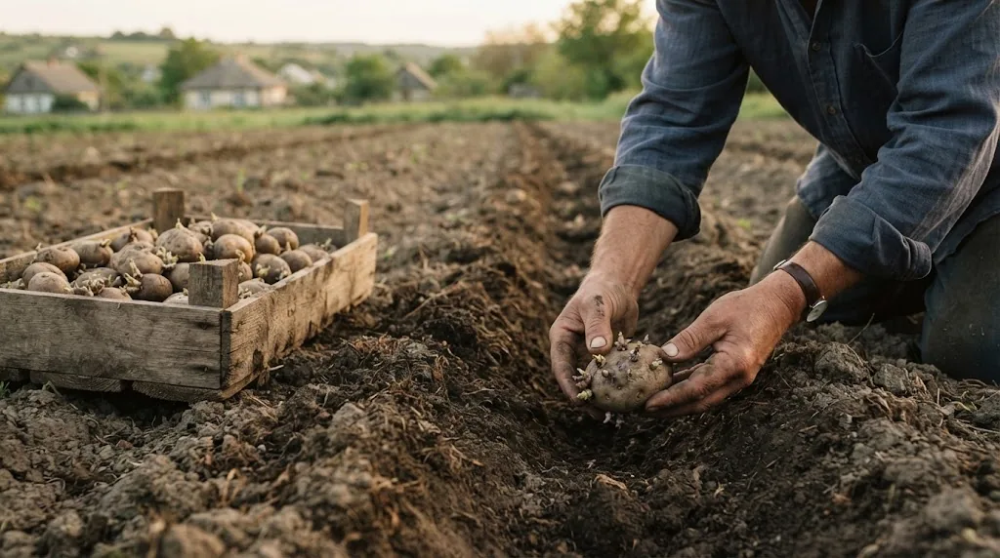
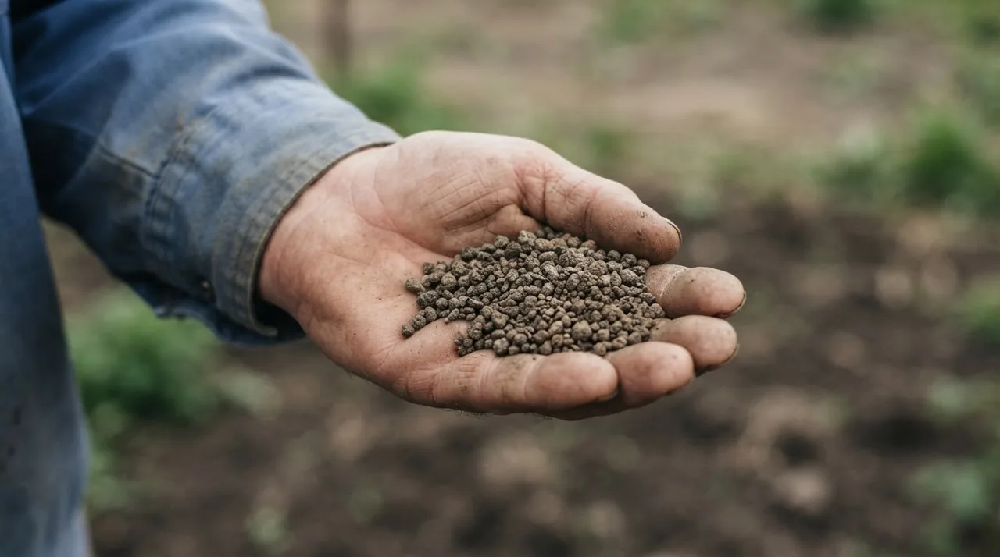
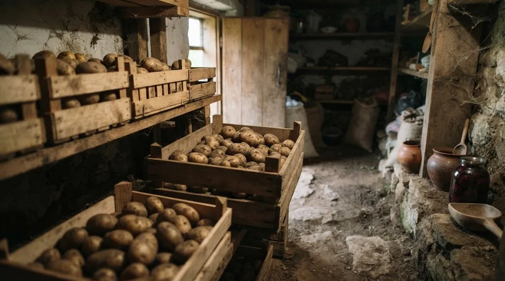

Коротко
- Відстань між кущами: 25 см для ранніх сортів, 30–35 см для пізніх.
- Глибина лунки: 8–10 см на піщаному ґрунті, 5–6 см на глинистому.
- Органічне добриво GREENODIN вносять при посадці: 250 кг/га, або 25 г/м² у перший рік.
- Кислий ґрунт (pH 4,5–6,0): GREENODIN GRAY. Нейтральний і лужний (від 7,0): GREENODIN BROWN.
- Зберігання: 5–7 °C і вологість повітря 90–95%.
Який ґрунт потрібен картоплі
Картопля росте на пухкому, родючому ґрунті, де вода не застоюється. Надлишок вологи в кореневій зоні це найкоротший шлях до гнилі бульб, тому дренаж важливіший за будь-яке добриво.
Ідеальний pH близько 6,0, але картопля терпима до кислої реакції. У восьмирічному досліді на дерново-підзолистому ґрунті Полісся її врожайність практично не залежала від pH у межах 4,4–7,4. Вапнувати картопляну ділянку радять лише при pH нижче 4,9. Якщо земля кисла, вибирайте GRAY: за даними виробника, він частково вирівнює кислотність. Як виміряти pH на своїй ділянці, читайте в окремій статті.
Посадка картоплі: відстані й глибина
Не поспішайте. Листя сусідніх кущів не повинно затінювати одне одного, бо фотосинтез залежить від світла.
| Параметр | Значення |
|---|---|
| Ранні сорти, відстань між кущами | 25 см |
| Пізні сорти, відстань між кущами | 30–35 см |
| Розсада з очками або відводками | 20–25 см |
| Глибина лунки, піщаний ґрунт | 8–10 см |
| Глибина лунки, глинистий ґрунт | 5–6 см |

Посадковий матеріал оберіть здоровий, правильної форми і не пересушений. Ідеальний варіант сертифікований насіннєвий. Якщо садите різаною картоплею, залишайте на кожному шматку одне-два вічка і витримайте розрізані частини день-два в прохолодному провітрюваному місці. Припудрити зрізи можна діатомітом або деревною золою. Перед посадкою всі бульби, цілі й різані, треба прогріти.
Після посадки накрийте лунки землею й добре полийте. Коли кущі ростуть, підгортайте ґрунт до стебел, щоб бульби не позеленіли. Стежте, щоб не пошкодити стебла та корені.
Добрива для картоплі: скільки вносити і коли

Добриво вносять перед посадкою або прямо під час неї, розсипаючи по поверхні. Бажано, щоб частина гранул потрапила в лунку, ефект буде помітніший. Норма: 250 кг/га, тобто 25 г на квадратний метр або на кущ.
- Ґрунт кислий (pH 4,5–6,0): GREENODIN GRAY.
- Ґрунт нейтральний або слабколужний (pH від 7,0): GREENODIN BROWN.
Виробник стверджує, що добриво накопичується в ґрунті, тому норму можна щороку знижувати приблизно на 20% від попередньої. Рекомендована схема така.
| Рік | кг/га | г/м² |
|---|---|---|
| 1-й | 250 | 25 |
| 2-й | 200 | 20 |
| 3-й | 160 | 16 |
| 4-й | 128 | 13 |
| 5-й | 100 | 10 |
| 6-й і далі | 80 | 8 |
Норми подано за даними виробника. Зниження доз залежить від ґрунту й погоди, тому перші сезони порівнюйте результат з контрольною ділянкою.
Підживлення
Зазвичай вистачає внесення при посадці. Якщо хочете більше, повторіть базову дозу GRAY (на лужному ґрунті BROWN) на тій самій площі й рясно полийте.
Полив і шкідники
Поливайте глибоко один-два рази на тиждень, залежно від погоди й регіону. Не переливайте: на мокрій землі розвиваються хвороби. Мульча довше зберігає вологу. За даними виробника, кремнієва матриця GRAY накопичує вологу, і полив можна скоротити приблизно на третину.
Проти комах працюють пастки, корисні комахи (сонечка, золотоочки) і регулярний огляд кущів. Якщо без обробки не обійтися, обирайте органічні засоби: діатомітовий порошок, олію німа, піретрин. Хімічні пестициди в органічному землеробстві заборонені.
Збирання і зберігання
Копайте, коли бадилля відмерло, а шкірка затверділа. Землю обтрушуйте, але не мийте бульби. Дві-три тижні підсушуйте в прохолодному, темному, провітрюваному місці.

Для зимового зберігання підтримуйте 5–7 °C і вологість 90–95%, відсортуйте пошкоджені бульби й використайте їх першими. Про хвороби, зокрема фітофтороз, паршу й рак картоплі, читайте в другій частині: хвороби картоплі і як їх запобігти.
Часті запитання
На яку глибину садити картоплю?
На піщаному ґрунті 8–10 см, на глинистому 5–6 см. Чим важча земля, тим дрібніше.
Яке добриво вибрати, GRAY чи BROWN?
Залежить від pH. GRAY для кислого ґрунту (4,5–6,0), BROWN для нейтрального й лужного (від 7,0). Норма однакова: 25 г/м², тобто 250 кг/га.
Як часто можна садити картоплю на одному місці?
Класичне правило: не частіше одного разу на чотири роки. Кращі попередники: озимі зернові, багаторічні трави, суміші злаків з бобовими, люпин, льон, ріпак.
Чи небезпечно перевищити дозу органічного добрива?
За даними виробника, перевищення рекомендованої дози і контакт добрива з посадковим матеріалом безпечні, оскільки добриво органічне. Тим не менш, намагайтеся не відхилятися від норми без потреби.
Директор НВ ТОВ «СІНТА», розробник органічних добрив ТМ GREENODIN.
Опубліковано 12 жовтня 2026. Оновлено 12 жовтня 2026.
Джерела
- Інструкція із застосування GREENODIN GRAY для картоплі, НВ ТОВ «СІНТА» (дані виробника: норми внесення, відстані й глибина посадки, режим зберігання)
- Polovyi V. M., Yashchenko L. A., Holub S. M., Kutuza D. M. Врожайність традиційних культур Полісся залежно від динаміки обмінної кислотності дерново-підзолистого ґрунту при різних нормах CaCO₃. Вісник НУВГП, серія «Сільськогосподарські науки», 2024, вип. 4(108)
- Lime needs in Minnesota. University of Minnesota Extension (США)